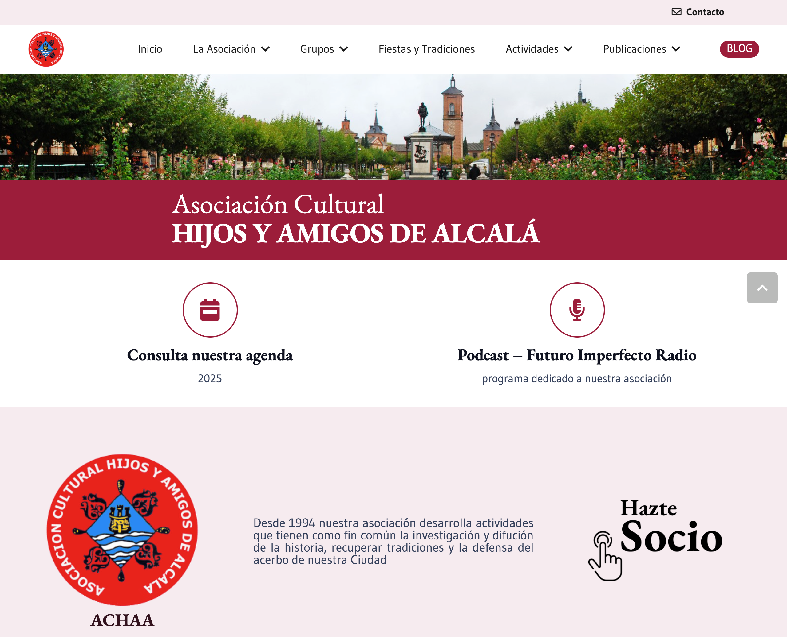
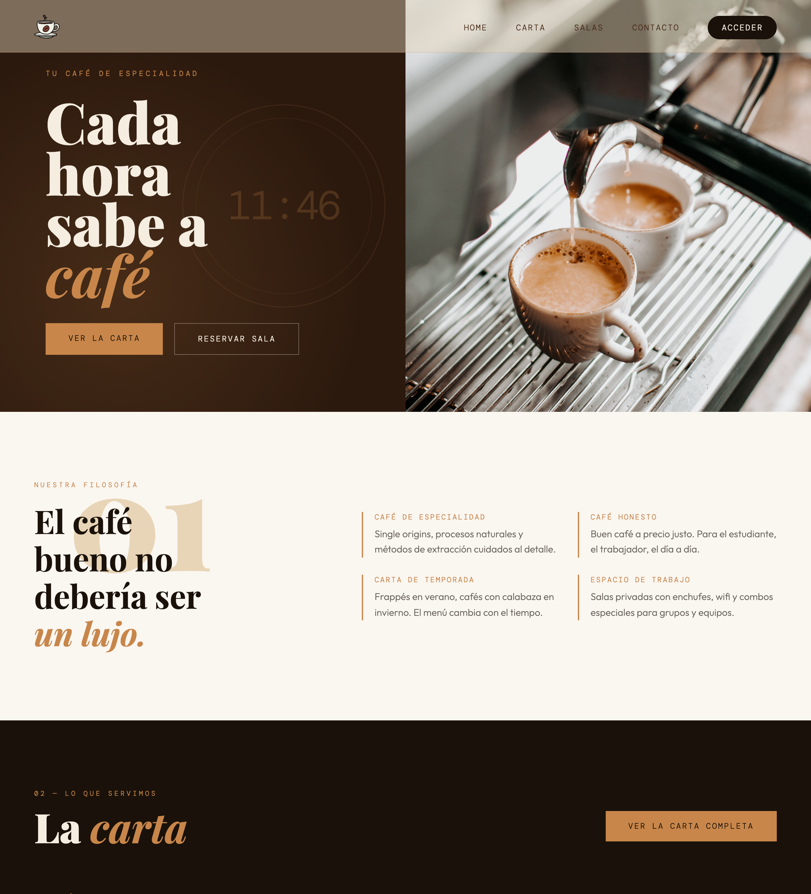

Desarrolladora web
Especialista en WordPress, UX/UI y desarrollo Full-Stack. Combino arquitectura de datos, diseño en Figma y código limpio para construir webs que convierten.
Trabajamos juntos?— mueve el cursor —
Interfaces modernas, semánticas y optimizadas para conversión.
Desarrollo end-to-end con los principales builders del ecosistema WP.
Consultas, conexiones y lógica de servidor para visualización dinámica.
Del wireframe al prototipo funcional, con fidelidad visual garantizada.
Configuración de entornos, hosting, DNS y correo corporativo.
Landings de alta conversión y campañas de email desde cero.

Sitio web funcional para una asociación cultural en Alcalá de Henares. Arquitectura de contenidos, diseño adaptado a la comunidad y gestión completa del entorno de producción. Web viva y en uso activo.

Diseño y maquetación completa de una web para una cafetería, desarrollado como Trabajo Final de Grado Superior en DAW. Prototipado en Figma e implementación frontend desde cero.
Trabajo de agencia, e-commerce y landings de conversión
¿Hablamos?
Abierta a nuevos proyectos, colaboraciones y oportunidades laborales.